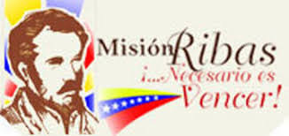
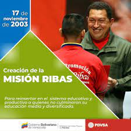

La Misión Ribas: Necesario es Vencer

Visión de la Sociedad Civil y el Estado
"La sociedad civil está compuesta por muchos grupos. El estado debería no sólo reconocer su papel y respetar su libertad de acción, sino también ofrecer la ayuda que puedan necesitar para llevar a cabo sus funciones".
- Doctrina social de la Iglesia
La Misión Ribas, impulsada por la República Bolivariana de Venezuela en colaboración con Petróleos de Venezuela (PDVSA), es un programa educativo alternativo pionero. Proporciona la oportunidad crucial de continuar los estudios de bachillerato, adoptando un régimen andragógico diseñado para responder a las exigencias de responsabilidad, autonomía, ritmo de desarrollo y las necesidades personales de superación con una profunda visión social dentro del colectivo al que pertenecen sus participantes.
Partiendo de la concepción de la educación como el "principio articulador del desarrollo con equidad social", y reconociendo que los esfuerzos previos en acceso a la educación media habían sido insuficientes, el Estado venezolano asumió la responsabilidad de "garantizar la justicia social como lo ordena la Constitución". Así, mediante el Decreto 2.656 del 16 de octubre de 2003, fue creada la Comisión Presidencial Misión Ribas.
Preámbulo Constitucional y Fundamentos de la Educación
El refundamiento de la República Boliviana de Venezuela busca establecer una sociedad democrática, participativa y protagónica, bajo un Estado de justicia que asegure derechos fundamentales como la vida, el trabajo, la cultura y la educación, sin discriminación ni subordinación.
El Artículo 2 de la Constitución de la República Bolivariana de Venezuela establece que es un Estado democrático y social de derecho y de justicia, propugnando valores superiores como la vida, la libertad, la justicia, la igualdad, la solidaridad, la democracia, la responsabilidad social, y la preeminencia de los derechos humanos, la ética y el pluralismo político.
En el Artículo 102, se destaca que la Educación es un derecho humano y un deber social fundamental, de carácter democrático, gratuito y obligatorio. El Estado asume la Educación como una función indeclinable en todos sus niveles y modalidades, y como instrumento para el conocimiento científico, humanístico y tecnológico al servicio de la sociedad.
El Artículo 103 garantiza el derecho a una educación de calidad sin discriminaciones, siendo obligatoria hasta el pre-grado. El Estado debe proveer los recursos necesarios para el acceso, permanencia y culminación de los estudios. Finalmente, el Artículo 104 exige que la educación esté a cargo de personas con reconocida moralidad e idoneidad académica, promoviendo su actualización, estabilidad y un nivel de vida digno. Este enfoque responde a un Estado docente que busca superar las desigualdades sociales y educativas.
¿Por qué José Félix Ribas? Un Héroe, una Inspiración

José Félix Ribas, nacido en Caracas el 19 de septiembre de 1775, último de once hijos de una distinguida familia y tío político de Simón Bolívar, se erige como un símbolo de valentía y liderazgo en la gesta independentista venezolana.
Su participación activa comenzó el 19 de abril de 1810, incitando a los ciudadanos a sumarse a la causa republicana. Fue protagonista de numerosas batallas, pero su hazaña más memorable tuvo lugar en la Batalla de La Victoria el 12 de febrero de 1814. Con un ejército joven e inexperto, formado mayoritariamente por estudiantes y seminaristas que él mismo reclutó, Ribas logró detener el avance de las fuerzas realistas. Su célebre frase: “No podemos optar entre vencer o morir, necesario es vencer”, se convirtió en un grito de guerra y en un lema que resuena hasta hoy. En honor a esta victoria y al coraje de esos jóvenes, cada 12 de febrero se celebra en Venezuela el “Día de la Juventud”.
A pesar de su heroísmo, la vida de Ribas terminó trágicamente en Tucupido el 31 de enero de 1815, tras ser capturado y su cabeza exhibida en Caracas. Su legado, sin embargo, perdura como un faro de resiliencia, determinación y la convicción de que la victoria es una necesidad cuando se lucha por una causa justa, un principio que la Misión Ribas encarna plenamente.

Objetivos Fundamentales de la Misión Ribas
- Incorporar a la población excluida al Sistema de Educación Formal-Básica-Diversificada.
- Lograr que todos los venezolanos y venezolanas sean bachilleres, impulsando así un nuevo proyecto educativo nacional que coadyuvará de manera contundente a la transformación del país.
- Democratizar la educación dentro de un marco de integración nacional, garantizando el acceso a un sistema educativo de calidad para todos los venezolanos.
- Proporcionar a la población venezolana acceso y participación a un sistema educativo sin exclusión y de calidad, que facilite su incorporación al aparato productivo nacional y al sistema de educación superior, mejorando su calidad de vida a corto y mediano plazo.
La visión de la Misión Ribas es elevar el nivel educativo de la población venezolana, comprometida con el principio de justicia social consagrado en la Constitución de la República Bolivariana de Venezuela.
Propósito General
Consiste en proporcionar a los ciudadanos y ciudadanas que no han podido culminar el bachillerato, la oportunidad de ingresar a un sistema educativo no excluyente y de calidad, que facilite su incorporación al aparato productivo nacional y al sistema de educación superior, mejorando su nivel de vida.
Instituciones Participantes
- Ministerio de Energía y Minas. PDVSA. CADAFE.
- Ministerio de Educación Cultura y Deportes (Zonas Educativas y Distritos Escolares)
- Ministerio de Educación Superior.
- Ministerio de la Defensa (CUFAN).
- Ministerio de Ciencia y Tecnología.
- Ministerio de Comunicación e Información.
- Instituto Nacional de la Juventud.
- Frente de Luchadores Sociales “Francisco de Miranda”.
- Federación Bolivariana de Estudiantes.
- Clase Media en Positivo.
- Gobernaciones.
- Alcaldías
- Instituciones públicas y privadas.
- Los Vencedores y las Vencedoras.
- Los Facilitadores y las Facilitadoras.
- Los Formadores y las Formadoras.
Nuestra Visión Pedagógica de la Misión
La Misión Ribas aborda el desafío de reinsertar a individuos en el sistema educativo, especialmente aquellos con dificultades en el dominio de la lengua escrita o que son reticentes a los modelos tradicionales. Reconocemos que el desarrollo no debe ser efímero ni depender de un currículo preestablecido. Siguiendo a Brofenbrenner (1979), creemos que el desarrollo implica reestructuraciones en la comprensión del contexto y en la acción sobre este, siendo un proceso intrapsíquico e individual que fomenta la evolución de competencias para interactuar con el ambiente.
Uno de los objetivos clave es promover el pensamiento crítico y efectivo, la comunicación clara, la formulación de juicios relevantes y la discriminación de valores (Lipman, 1998). Buscamos crear un ambiente de aprendizaje donde la lengua escrita sea una práctica social funcional y recreativa, donde se fomente la formulación de hipótesis y se vea el error como una experiencia productiva. Los materiales deben ser atractivos y útiles para resolver problemas de la vida real, permitiendo así investigar, describir y promover sus estrategias de pensamiento para el crecimiento personal.
Plan de Estudios y Logros
El Plan de Estudios de la Misión Ribas se cimienta en el componente comunitario y socio-laboral, integrando los pilares de la pedagogía contemporánea: Aprender a conocer, Aprender a Hacer, Aprender a Convivir, Aprender a Ser.
Estos valores y conocimientos se imparten mediante un sistema de "teleclases", complementado por la guía de un facilitador. Este sistema es completamente gratuito, y los materiales de estudio son provistos por la Misión Ribas sin costo alguno.
Hasta la fecha, 739.969 vencedores y vencedoras han obtenido el Título de Bachiller de la República Bolivariana de Venezuela, incluyendo compatriotas privados de libertad, indígenas, soldados en servicio militar activo y personas con discapacidad, lo que demuestra la inclusión y alcance del programa.
Para impulsar la inserción productiva de los graduados y mejorar su calidad de vida, se han creado la Misión Ribas Productiva y la Misión Ribas Técnica, promoviendo así un trabajo organizado en beneficio de las comunidades.
La Misión Ribas es un componente esencial de un amplio conjunto de misiones y programas sociales que buscan saldar la histórica deuda social acumulada, heredada de la IV República. Estos planes no solo abordan las carencias materiales, sino que también tienen la misión de construir una nueva subjetividad revolucionaria para la patria socialista, a través de sus programas educativos.
Menciones Ofertadas en Guásimos Palmira:
- Informática.
- Turismo.
- Textil.
- Agropecuaria.
- Mecánica.
- Construcción civil.
Turnos Disponibles:
- Lunes a viernes: Diurno y nocturno.
- Sabatino: Todo el día.
Localidad Principal:
La sede de la Misión Ribas en Palmira se encuentra en la localidad de Guásimos.
Misión Ribas en el Marco del Plan de la Patria 2020-2025
Dentro del Plan de la Patria 2020-2025, la Misión Ribas se alinea con los siguientes objetivos estratégicos:
- Consolidar un estilo científico, tecnológico e innovador de carácter transformador, diverso, creativo y dinámico, garante de la independencia y la soberanía económica, contribuyendo así a la construcción del modelo productivo socialista, el fortalecimiento de la ética socialista y la satisfacción efectiva de las necesidades del pueblo venezolano.
- Consolidar el Sistema Nacional de Misiones y Grandes Misiones Socialistas Hugo Chávez, como conjunto integrado de políticas y programas que materializan los derechos y garantías del Estado Social de Derecho y de Justicia, sirviendo de plataforma de organización, articulación y gestión de la política social en los distintos niveles territoriales del país, para dar mayor eficiencia y eficacia a las políticas sociales de la Revolución.
- Fortalecer el Sistema Estadístico y Geográfico Nacional como plataforma del sistema de datos nacionales y generador de las políticas transversales en la materia.
- Desarrollar las capacidades científico-tecnológicas que hagan viable, potencien y blinden la protección y atención de las necesidades del pueblo y el desarrollo del país potencia.
Este proyecto educativo está integrado en el Plan Nacional de Prevención y Protección contra el Coronavirus (COVID-19), garantizando la atención educativa a toda la población estudiantil del país de forma alternativa.